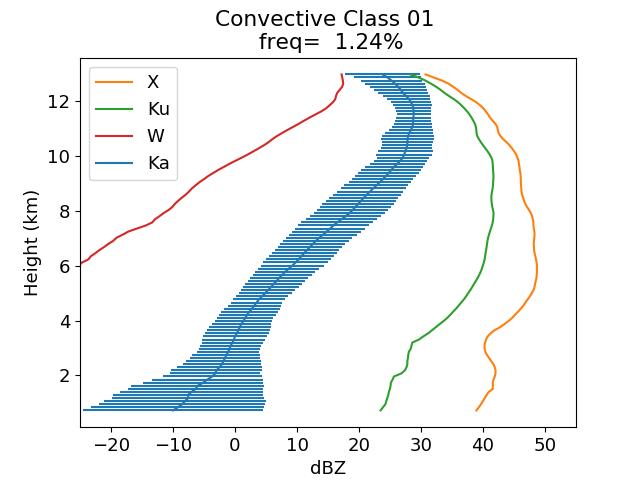
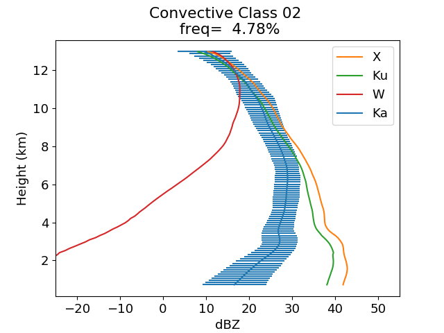
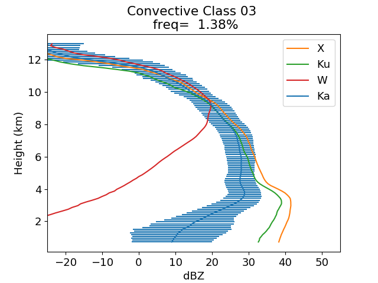
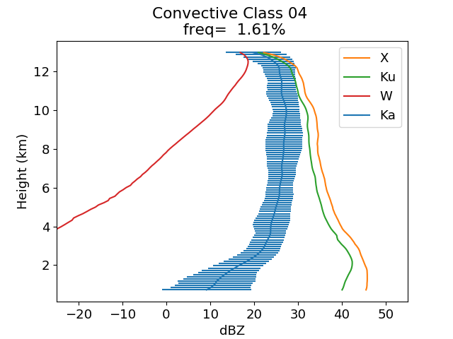
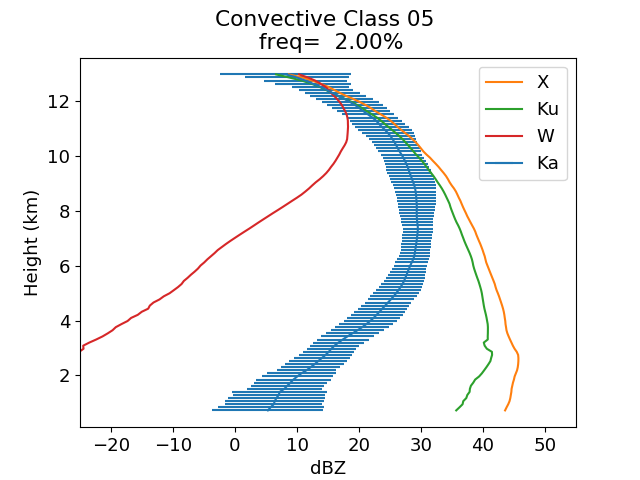
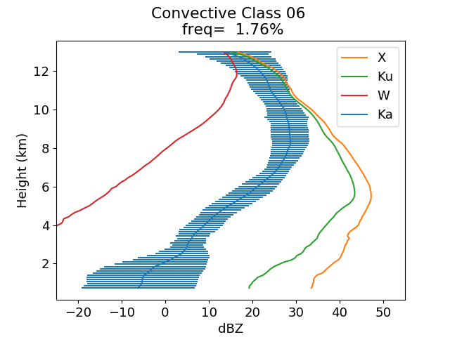
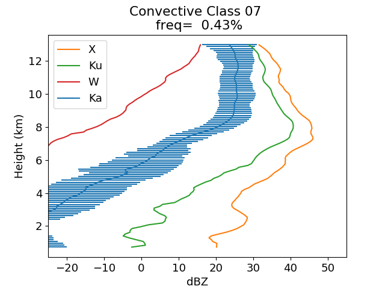
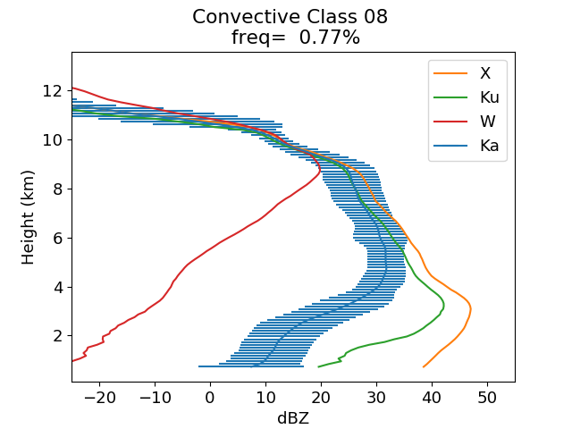

2014523 Time=22:19 lat= 34.96 lon=-80.98 distance_to_NPOL=93.08 km
2014523 Time=22:48 lat= 34.79 lon=-81.73 distance_to_NPOL=49.66 km
2014523 Time=22:54 lat= 34.63 lon=-81.43 distance_to_NPOL=79.67 km
2014529 Time=21:28 lat= 35.74 lon=-81.70 distance_to_NPOL=64.81 km

2014523 Time=22:19 lat= 34.94 lon=-80.95 distance_to_NPOL=96.74 km
2014523 Time=22:54 lat= 34.60 lon=-81.34 distance_to_NPOL=86.95 km
2014529 Time=21:27 lat= 35.74 lon=-81.60 distance_to_NPOL=68.89 km

2014529 Time=20:40 lat= 35.77 lon=-81.89 distance_to_NPOL=64.33 km
2014529 Time=21:35 lat= 35.90 lon=-81.67 distance_to_NPOL=83.15 km

2014523 Time=22:19 lat= 34.95 lon=-80.97 distance_to_NPOL=94.43 km
2014523 Time=22:27 lat= 34.99 lon=-80.91 distance_to_NPOL=98.81 km
2014523 Time=22:50 lat= 34.63 lon=-81.54 distance_to_NPOL=73.85 km
2014523 Time=22:55 lat= 34.65 lon=-81.47 distance_to_NPOL=75.65 km
2014529 Time=21:27 lat= 35.74 lon=-81.61 distance_to_NPOL=68.56 km

2014523 Time=22:19 lat= 34.93 lon=-80.94 distance_to_NPOL=97.60 km
2014523 Time=22:27 lat= 34.98 lon=-80.90 distance_to_NPOL=99.41 km
2014523 Time=22:50 lat= 34.66 lon=-81.57 distance_to_NPOL=69.09 km
2014523 Time=22:54 lat= 34.62 lon=-81.39 distance_to_NPOL=82.37 km
2014529 Time=21:27 lat= 35.74 lon=-81.59 distance_to_NPOL=69.17 km

2014523 Time=22:19 lat= 34.92 lon=-80.92 distance_to_NPOL=100.00 km
2014523 Time=22:27 lat= 34.98 lon=-80.90 distance_to_NPOL=99.62 km
2014523 Time=22:48 lat= 34.76 lon=-81.69 distance_to_NPOL=54.28 km
2014523 Time=22:54 lat= 34.62 lon=-81.41 distance_to_NPOL=81.16 km
2014529 Time=21:28 lat= 35.74 lon=-81.62 distance_to_NPOL=67.92 km

2014523 Time=22:19 lat= 34.97 lon=-81.01 distance_to_NPOL=90.57 km
2014523 Time=22:48 lat= 34.80 lon=-81.74 distance_to_NPOL=48.12 km
2014523 Time=22:55 lat= 34.64 lon=-81.47 distance_to_NPOL=76.39 km

2014529 Time=21:35 lat= 35.90 lon=-81.66 distance_to_NPOL=83.40 km
